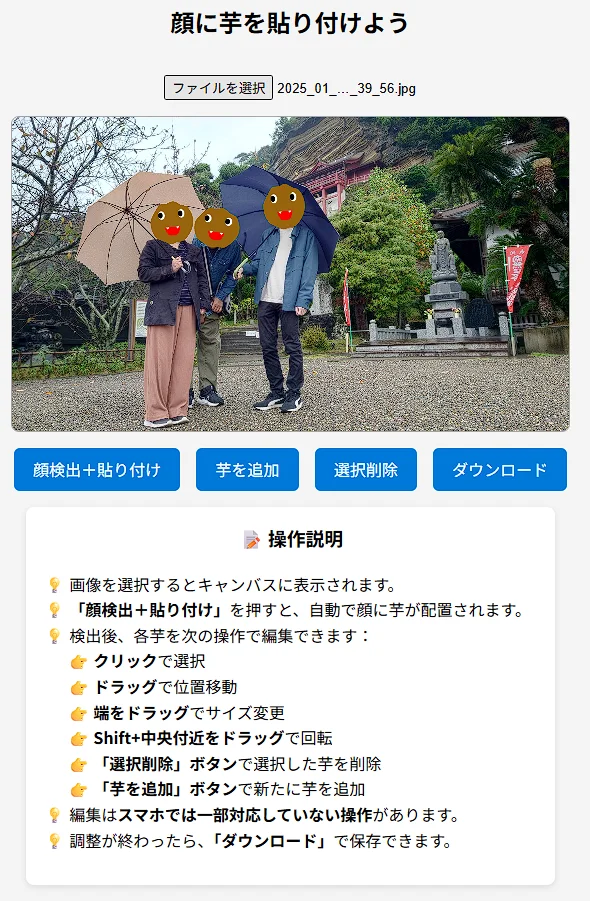

Imoface
作品紹介
画像を選択すると、顔を認識してキャラクターの画像を貼り付けるツールです。
SNSに画像をアップロードする際のプライバシー保護に使用することを目的としています。

工夫点・技術的特徴
BlazeFaceというライブラリを使用して顔認識をしています。
かなり軽量なAIで、サーバーのリソースを使うことなくブラウザ側で動作することができます。
精度の問題も考え、手動で調整もできるようになっています。
作品リンク
GitHubソース実行ページ